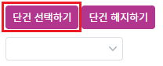
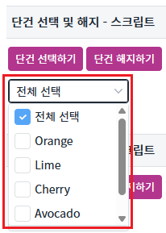
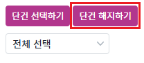
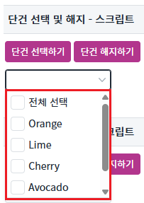
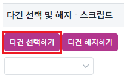
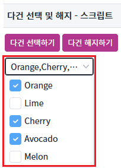
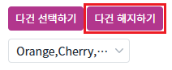
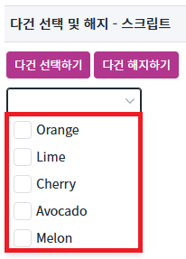
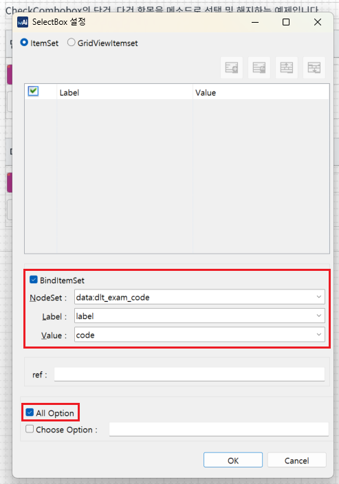

[Checkcombobox] 단건, 다건 항목 선택 및 해지하기
1개요
CheckCombobox의 'setSelectedInfo' 메소드를 사용하여 단건, 다건 항목 선택 및 해지하는 예제입니다.
2구현된 기능
단건 선택 및 해지하기
다건 선택 및 해지하기
3예제 테스트 방법
3.1단건 선택 및 해지하기
예제 영역 '단건 선택 및 해지 - 스크립트'에서 테스트합니다.1
STEP 1: '단건 선택하기' 버튼을 클릭한다.
Image 1.브라우저(Chrome) 실행 예시

2
STEP 2: 실행된 결과를 확인합니다.
목록을 확장해서 '전체 선택' 항목이 선택된 것을 확인한다.
Image 2.브라우저(Chrome) 실행 예시

3
STEP 3: '단건 해지하기' 버튼을 클릭한다.
Image 3.브라우저(Chrome) 실행 예시

4
STEP 4: 실행된 결과를 확인합니다.
목록을 확장해서 항목이 해지된 것을 확인한다.
Image 4.브라우저(Chrome) 실행 예시

3.2다건 선택 및 해지하기
예제 영역 '다건 선택 및 해지 - 스크립트'에서 테스트합니다.1
STEP 1: '다건 선택하기' 버튼을 클릭한다.
Image 5.브라우저(Chrome) 실행 예시

2
STEP 2: 실행된 결과를 확인합니다.
목록을 확장하여 'Orange, Cherry, Avocado'가 올바르게 선택되었는지 확인한다.
Image 6.브라우저(Chrome) 실행 예시

3
STEP 3: '다건 해지하기' 버튼을 클릭한다.
Image 7.브라우저(Chrome) 실행 예시

4
STEP 4: 실행된 결과를 확인합니다.
목록을 확장해서 항목이 해지된 것을 확인한다.
Image 8.브라우저(Chrome) 실행 예시

4구현 예시
이 기능은 컴포넌의 목록이 DataList와 연결되어야 사용할 수 있는 기능입니다.
4.1DataList 정의하기
컴포넌트의 목록과 연결할 DataList를 정의합니다.
DataList를 생성하고 ID를 dlt_exam_code로 할당합니다.
필수로 정의될 컬럼은 2가지로 아래와 같습니다. 컬럼의 ID는 환경에 맞게 정의할 수 있습니다.label : 화면에 출력할 레이블
code : 화면에 출력할 레이블의 값
Image 9.웹스퀘어 스튜디오 예시

생성한 DataList에서 사용할 데이터를 할당합니다. 예제에서는 DataList에 별도로 데이터를 세팅하고 있습니다.
Image 10.웹스퀘어 스튜디오 예시

4.2컴포넌트의 목록과 DataList 연결하기
- 스튜디오의 디자인 탭에서 컴포넌트를 더블 클릭하여 목록과 DataList를 연결합니다. (아래의 이미지를 참고하여 설정합니다)
- 'All Option'을 체크해서 '전체 선택' 항목이 나오게 합니다.
Image 11.웹스퀘어 스튜디오의 '디자인' 탭 예시 - 컴포넌트 선택

Image 12.웹스퀘어 스튜디오의 '디자인' 탭 예시 - 목록과 DataList 연결하기

4.3단건 선택 및 해지하기
스크립트로 설정하기
메소드 'setSelectedInfo'을 사용하여 설정합니다.
Example 1.Script
// 단건 선택하기 버튼 클릭 scwin.btn_ex1_onclick = function (e) { // All Option 체크한 상태 - 전체 선택이 index : 0 ccb_exam1.setSelectedInfo([{index:0,checked:true}]); }; // 단건 해지하기 버튼 클릭 scwin.btn_ex2_onclick = function (e) { // All Option 체크한 상태 - 전체 선택이 index : 0 ccb_exam1.setSelectedInfo([{index:0,checked:false}]); };
4.4다건 항목 선택하기 (' '로 구분짓기)
4.1 ~ 4.2 까지는 동일, 'All Option'은 해제
스크립트로 설정하기
메소드 'setSelectedInfo'을 사용하여 설정합니다.
Example 2.Script
// 다건 선택하기 버튼 클릭 scwin.btn_ex3_onclick = function (e) { ccb_exam2.setSelectedInfo([{index:0,checked:true},{index:2,checked:true}, {index:3,checked:true}]); }; // 다건 해지하기 버튼 클릭 scwin.btn_ex4_onclick = function (e) { ccb_exam2.setSelectedInfo([{index:0,checked:false},{index:2,checked:false}, {index:3,checked:false}]); };
속성으로 설정하기
'separator' 속성을 사용하여 선택한 항목을 구분하고, 값으로 공백(space)을 지정합니다.
Image 13.웹스퀘어 스튜디오의 'Component' 탭 예시 - 컴포넌트 선택

5주요 API
setSelectedInfo(infoArray)